Modulation
Information has to travel over something physical, and what that something can carry is rarely what the signal happens to look like. A communication channel is a physical medium or logical construct that allows transmission of information
- A twisted pair of wires
- Fiber-optic cable
- Radio signals over the air
- The radio frequency range between 900 kHz and 910 kHz
- An HDMI cable
Not every signal can be readily transmitted on every channel; it needs to be modulated first.
Modulation is the act of fitting a signal into a channel. It relies heavily on the spectral view of signals introduced in Frequency and spectrum.
Multiplying two signals creates new frequencies
Two tones, added and multiplied
Take $x_1(t) = \cos(2\pi 2093 t)$, the note C, and $x_2(t) = \cos(2\pi 3520 t)$, the A a major sixth above it.
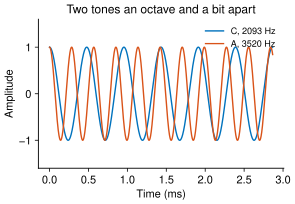
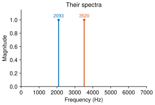
C, $2093$ Hz:
A, $3520$ Hz:
Adding them gives $x_{sum}(t) = \cos(2\pi 2093 t) + \cos(2\pi 3520 t)$.
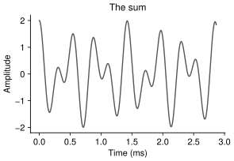
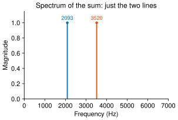
The two together. You hear both pitches, and nothing else:
The spectrum of the sum is the sum of the spectra, because the Fourier transform is linear (Frequency and spectrum). Adding signals adds nothing new to the frequency axis.
Multiplying them gives $x_{product}(t) = \cos(2\pi 2093 t)\cos(2\pi 3520 t)$, and the result is not like that at all.
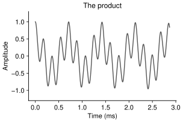
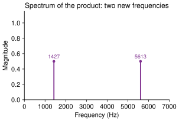
Now the product. Neither of the pitches you hear was in either signal:
How did we get frequencies that were in neither signal?
Why: multiplying by a cosine shifts the spectrum
Every signal is a weighted sum of complex exponentials, so it is enough to see what multiplication does to one of them. Take $x(t) = e^{i2\pi ft}$ and multiply by a cosine at $f_1$:
\[y(t) = e^{i2\pi ft}\,\frac{e^{i2\pi f_1 t} + e^{-i2\pi f_1 t}}{2} = \tfrac12 e^{i2\pi(f + f_1)t} + \tfrac12 e^{i2\pi(f - f_1)t}.\]The single frequency $f$ has become the pair $f + f_1$ and $f - f_1$, each at half the amplitude. Since this happens to every exponential in a signal, multiplying by a cosine takes the whole spectrum, makes two half-sized copies of it, and slides one up by $f_1$ and the other down by $f_1$.
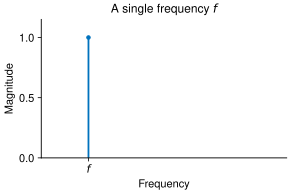
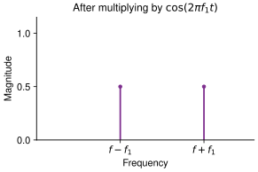
Two cosines are the special case, and there the same result follows from the identity $\cos a \cos b = \tfrac12(\cos(a+b) + \cos(a-b))$. For the two tones above,
\[\cos(2\pi 2093 t)\cos(2\pi 3520 t) = \tfrac12\cos(2\pi\,1427\,t) + \tfrac12\cos(2\pi\,5613\,t),\]since $3520 - 2093 = 1427$ and $3520 + 2093 = 5613$. Those are the two pitches in the recording of the product.
The live figure from Frequency and spectrum, set to the product of two tones:
Drag the winding frequency and the peaks turn up at $15$ and $25$ Hz, not at $5$ or $20$: the two frequencies in the product are the sum and the difference, and neither of the originals is there at all. The AM option in the menu puts a line back at $20$ Hz, the carrier itself, which the next section explains.
Why modulate?
Commonly, the signal frequency range (signal bandwidth) does not line up with the frequency range the channel can carry (channel bandwidth or channel passband). Take the violin recording from Representing information:
Here is its spectrum, averaged over the whole $45$ second recording:
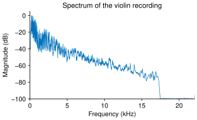
The vertical scale is in decibels, because a linear one hides exactly the part worth seeing: the content thins out steadily rather than stopping. It is $40$ dB down by about $6$ kHz and $60$ dB down by about $14$ kHz, and then falls off a cliff at around $15$ kHz — that cliff is not the violin, it is the lossy compression the recording went through, which threw away what it judged inaudible. Measured by energy, $93\%$ of this recording sits below $1$ kHz and $99.9\%$ below $5$ kHz.
So the signal occupies a band a few kilohertz wide, starting at zero. Zooming in on that part, on an ordinary scale, shows where it all is and the harmonic structure of the notes being played:
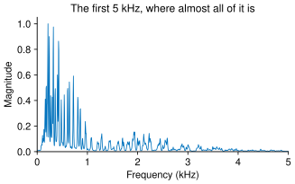
A signal’s own frequency range, running from zero up to its highest content, is called its baseband. We have two options:
- We could transmit that signal as is (baseband transmission).
- Transform the information so that it is transmitted in a different frequency range (modulated transmission).
Three things go wrong with the first option. A channel does not treat all frequencies alike, and some ranges reach further, lose less, or pick up less noise than others; leaving the signal where it happens to sit throws that away, whereas moving it puts it where the channel is good. Everyone’s baseband is the same range, so two signals sent that way collide, while moving each to its own range lets many share one medium at once, which is the subject of Multiple access. And a digital signal’s sharp edges need a wide band to survive, wider than most channels will give at baseband.
Amplitude modulation
Modulation needs two signals. The carrier $x_c(t) = \cos(2\pi f_c t)$ is a waveform chosen to suit the channel, and the message $x_m(t)$ carries the information. The carrier is then altered systematically by the message, and there are three things about a sinusoid that can be altered:
- amplitude modulation, which changes how large the carrier is;
- frequency modulation, which changes how fast it oscillates;
- phase modulation, which changes where in its cycle it is.
This chapter takes them in that order.
Carrier and message
Amplitude modulation multiplies the two signals together. Below, the message is a piecewise signal that is flat, ramps up to $1$, ramps down to $-1$ and then holds at $0.4$; the carrier is at $f_c = 100$ Hz.
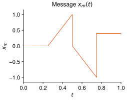
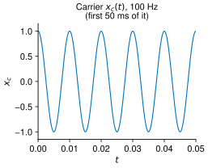
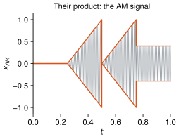
In the frequency domain
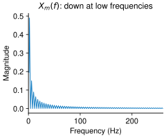
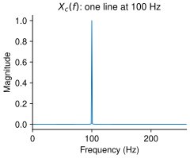
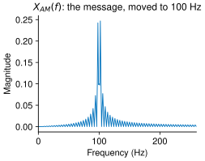
The message sits at low frequencies and the carrier is a single line at $100$ Hz. Multiplying in time moves the whole message up to sit around the carrier, which is the entire point of amplitude modulation.
A single tone makes the arithmetic explicit. With $x_m(t) = \cos(2\pi f_m t)$ and $f_m = 5$ Hz,
\[x_m(t)\cos(2\pi f_c t) = \tfrac12\cos(2\pi(f_c - f_m)t) + \tfrac12\cos(2\pi(f_c + f_m)t),\]two lines at $95$ and $105$ Hz. Adding the carrier back, as the AM form below does, puts a third line at $100$ Hz between them.
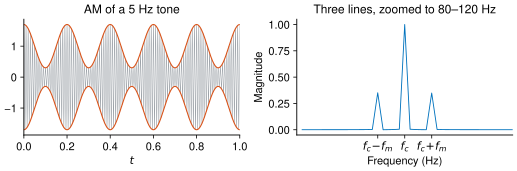
The copy below $f_c$ is the lower sideband and the copy above it is the upper sideband. These are the same three frequencies the live figure shows on its AM setting, scaled down to a $20$ Hz carrier.
Recovering the message: synchronous demodulation
The receiver has to undo the shift. The simplest way is to multiply by the carrier a second time, which shifts the spectrum again by $\pm f_c$ and so brings one of the two copies back down to where it started. In the time domain, using $\cos^2\theta = \tfrac12 + \tfrac12\cos 2\theta$,
\[x_m(t)\cos^2(2\pi f_c t) = \tfrac12 x_m(t) + \tfrac12 x_m(t)\cos(2\pi\,2f_c\,t).\]The first term is the message again. The second sits up around $2f_c$, and a low-pass filter (Frequency response) with its cutoff anywhere between the message bandwidth and $2f_c$ removes it. What is left is $\tfrac12 x_m(t)$: the message at half amplitude, which a gain of $2$ restores.
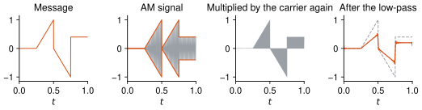
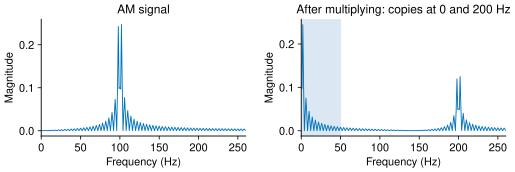
The same thing on a real signal. The violin recording from Representing information is low-passed to $2$ kHz to make the message, modulated onto an $8$ kHz carrier, and then demodulated.
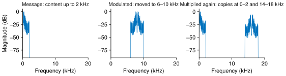
The message:
Modulated onto the 8 kHz carrier:
Recovered:
Recovered with the receiver’s carrier off by 2 Hz:
The modulated version is the message’s spectrum picked up and put down between $6$ and $10$ kHz. The rhythm survives, because the envelope is untouched, but the pitches are all wrong and the ear hears a thin buzz. Multiplying by the carrier again puts one copy back at $0$ to $2$ kHz and another up at $14$ to $18$ kHz; the low-pass keeps the first and the recording comes back. The fourth player is the same thing with the receiver’s carrier $2$ Hz off, and the result swells and fades four times a second.
Envelope detection and the modulation index
A receiver that has no copy of the carrier can still recover the message, provided the message never drives the signal through zero. Add a constant to it first:
\[x_{AM}(t) = \big(1 + m\,x_m(t)\big)\cos(2\pi f_c t), \qquad 0 < m \leq 1,\]where $m$ is the modulation index.
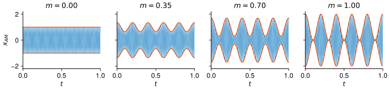
The orange curve is the envelope $1 + m\,x_m(t)$. At $m = 0$ there is no message at all, just the carrier. As $m$ grows the envelope swings further, and at $m = 1$ it just touches zero.
An envelope detector recovers the message from that outline without needing the carrier: rectify the signal to keep its positive half, hold each peak and let the value decay slowly until the next one arrives, then subtract the constant $1$ and divide by $m$. It is a diode, a capacitor and a resistor, which is why every early radio used one. It only works while the envelope stays positive: for $m > 1$ the quantity $1 + m x_m$ goes negative, the detector tracks $\vert 1 + m x_m\vert$ instead, and the message comes out folded wherever that happens.
Sidebands, AM-SC, and single sideband
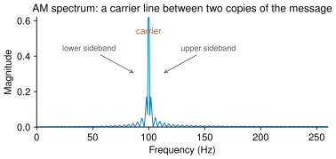
The AM spectrum is the carrier line with a copy of the message spectrum on either side of it, and each copy carries the whole message. That redundancy, and the carrier line itself, are what the two variants trade against each other.
| carrier sent | demodulated by | power | |
|---|---|---|---|
| AM | yes | envelope detector, or synchronously | most of it goes to the carrier |
| AM-SC | no | synchronously only | all of it goes to the message |
AM-SC, $x_m(t)\cos(2\pi f_c t)$, is the form used at the start of this section. It spends nothing on a carrier that carries no information, but the receiver must supply its own, exactly. AM with carrier wastes power in order to make the receiver cheap.
Single sideband goes further: since both copies say the same thing, send one and halve the bandwidth. The receiver gets harder again, which is the recurring trade.
AM radio
Each AM station is allotted $10$ kHz. The audio is low-pass filtered at $5$ kHz before modulation, because the two sidebands then fill that slot exactly, and it is modulated onto the carrier frequency the station is licensed for, amplified and transmitted. At the other end a band-pass filter picks out the one station and an envelope detector recovers the audio. Many stations still broadcast this way.
Digital amplitude modulation: ASK
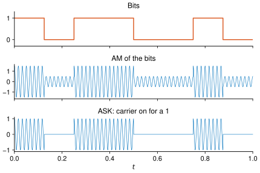
When the message is a stream of bits rather than a waveform, the modulation can be cruder: switch the carrier on for a $1$ and off for a $0$. This is amplitude shift keying. It differs from AM of the same bits, where both bit values leave the carrier present and only change its size.
What AM does badly
The carrier consumes most of the transmitted power and carries no information at all. AM-SC removes it, at the price of a receiver that must generate its own carrier in step with the transmitter.
The two sidebands carry the same information twice, so half the occupied bandwidth is redundant. Single sideband removes one, at the price of a more complicated receiver again.
Worst is noise. Noise added along the way has some fixed size, while the AM signal’s size varies with the envelope. Wherever $1 + m x_m$ comes close to zero the noise is a large fraction of what is there, so the quiet parts of the message are the parts destroyed. That is the flaw frequency modulation exists to fix.
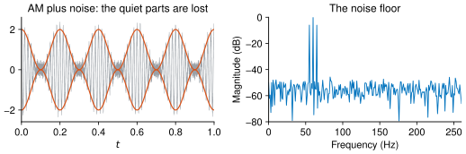
Frequency modulation
Instantaneous frequency
Write the carrier as $\cos\theta(t)$ with $\theta(t) = 2\pi f_c t + \phi$. Its frequency is the rate at which that angle advances, divided by $2\pi$: $\tfrac{1}{2\pi}\theta’(t) = f_c$. Taking this the other way round defines the instantaneous frequency of $\cos\theta(t)$, for any $\theta$ at all, as $\tfrac{1}{2\pi}\theta’(t)$.
The FM signal
Now let the instantaneous frequency follow the message, $\tfrac{1}{2\pi}\theta’(t) = f_c + f_\Delta\, x_m(t)$, and integrate to recover the angle:
\[x_{FM}(t) = \cos\!\Big(2\pi f_c t + 2\pi f_\Delta \int_0^t x_m(\tau)\,d\tau\Big).\]The constant $f_\Delta$ is the frequency deviation per unit of message, FM’s counterpart of the modulation index.
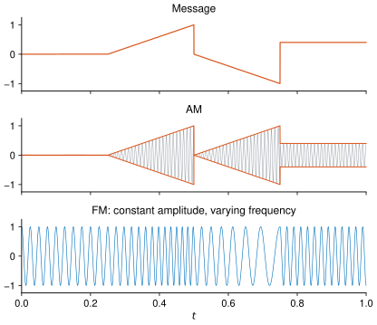
The amplitude never changes, so there is no quiet part for noise to overwhelm; that is the gain over AM. The receiver reads the message from how often the signal crosses zero rather than from how large it is, which is more work than an envelope detector. And the signal occupies more bandwidth, which is the price, quantified at the end of this chapter.
Frequency shift keying
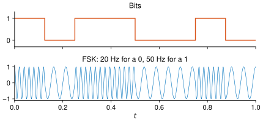
For bits, use two frequencies: $f_0$ for a $0$ and $f_1$ for a $1$. The receiver counts zero crossings within each bit interval and reports whichever frequency it saw. This is frequency shift keying.
Phase modulation
Phase modulation is frequency modulation of the derivative
The third quantity available in a sinusoid is where in its cycle it sits. Let the message set the phase:
\[\theta(t) = 2\pi f_c t + 2\pi k_p\, x_m(t),\]so that $\tfrac{1}{2\pi}\theta’(t) = f_c + k_p\, x_m’(t)$. Phase modulation by $x_m$ is therefore frequency modulation by the derivative $x_m’$, and the two schemes are close relatives rather than separate ideas.
Phase shift keying
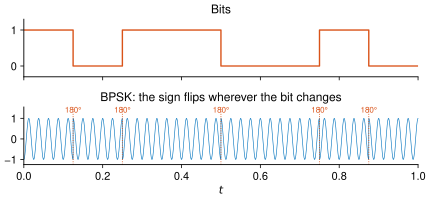
In binary phase shift keying, a $0$ is sent at phase $0$ and a $1$ at phase $\pi$, which simply flips the sign of the carrier. The waveform therefore jumps at every bit change, where an FSK waveform stays continuous.
A receiver that regenerates the carrier itself has no way to know which phase the
transmitter called $0$, since a constant offset of $\pi$ looks identical. Differential
phase shift keying sidesteps this by encoding a $1$ as a change of phase and a $0$ as
no change, so the receiver only ever compares one symbol with the one before it.
Starting from phase $0$, the message 11011000 is sent as the change sequence
10110100.
QPSK: two bits per symbol
Four phases carry two bits at a time instead of one.
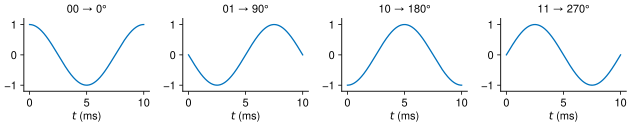
| dibit | phase |
|---|---|
| 00 | $0°$ |
| 01 | $90°$ |
| 10 | $180°$ |
| 11 | $270°$ |
The assignment of dibits to phases is a convention, not a derivation. Taking the
message 11011000 as the dibits 11 01 10 00 gives the phases $270°$, $90°$, $180°$,
$0°$, and with one carrier period per dibit — $0.01$ s at $f_c = 100$ Hz —
the bit rate is $2 / 0.01 = 200$ bit/s.
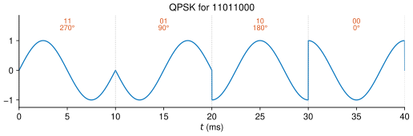
10010011, one carrier period per dibit, using
the table above.
The three schemes side by side
All three do the same job in different currency. Try amplitude modulation at $m = 1.2$, where the envelope crosses zero and the shape can no longer be read off it; frequency modulation with the deviation slider from $0$ to $12$ Hz, where the spectrum spreads wider the harder the message pushes; and phase modulation on the ramps message, where the phase jumps at the step at $t = 0.75$.
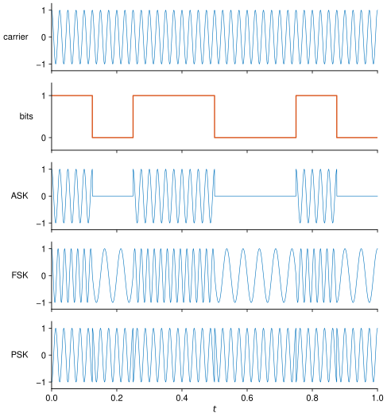
| the message changes the carrier’s | demodulated by | under noise | bandwidth | |
|---|---|---|---|---|
| AM / ASK | amplitude | envelope detector or synchronous | weak where the envelope is small | $2B$ |
| FM / FSK | frequency | zero-crossing rate | robust, constant amplitude | $\approx 2(\Delta f + B)$ |
| PM / PSK | phase | phase comparison | robust | about $2B$ |
Modern systems do not choose. Wi-Fi and cellular links vary amplitude and phase at the same time — quadrature amplitude modulation — to carry several bits in every symbol. How many can be carried, and how reliably, is the subject of Mathematics of communications; how several users share the result is Orthogonality and Multiple access.
How much bandwidth?
A message of bandwidth $B$, meaning all its content lies in $[-B, B]$ as in Sampling signals, occupies $2B$ once it is amplitude modulated: one sideband on each side of the carrier. AM broadcast radio takes $B = 5$ kHz and a $10$ kHz slot, which is where that allocation comes from.
FM is harder, because the signal’s width depends on how far the message pushes the frequency. Carson’s rule is the standard rule of thumb:
\[B_{FM} \approx 2(\Delta f + B), \qquad \Delta f = f_\Delta \max_t \vert x_m(t)\vert,\]with $\Delta f$ the peak frequency deviation. FM broadcast radio uses $\Delta f = 75$ kHz with audio up to $B = 15$ kHz, giving about $180$ kHz. That is why FM stations sit $200$ kHz apart while AM stations sit $10$ kHz apart, and it is the price paid for FM’s immunity to noise. Phase shift keying occupies about the same band as amplitude modulation at the same symbol rate.